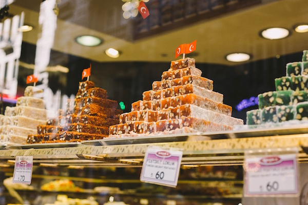
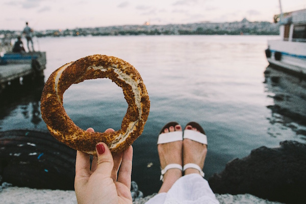

Turkish Delight
Don’t be fooled by the pink, sugary imitations you may have sampled in the past – Turkish Delight in Turkey (or Lokum, as the locals call it) is like nothing you’ve ever tried before. Consisting of mouth-watering combinations of chopped dates, pistachios, walnuts or hazelnuts, you will find this treat comes in a range of colourful flavours to suit your tastebuds.
İskender Kebab

Don’t leave Turkey without trying one of the most popular (and delicious) meat dishes in the Northwest. A play on the traditional Döner kebab, this dish consists of thinly sliced lamb served with a warm tomato sauce over pieces of traditional bread. Topped off with generous helpings of yogurt and butter, you’ll be left licking your plate clean.
Manti (Turkish Ravioli)

Pasta-lovers, prepare yourselves. Turkey has its own version of Ravioli! Little handmade dumplings are filled with ground lamb or beef, and then topped with a creamy yogurt sauce. Manti takes a lot of time to prepare, but once you’ve tasted a bite, you’ll see that the hard work pays off.
Mezze

Rest assured, you probably won’t leave Turkey without being served Mezze, which is a small selection of dishes commonly served with drinks or before a meal. Turkish Mezze often consists of yogurt with herbs, hummus, rice-stuffed vine leaves (dolmas), meatballs (kofte), eggplant salad, white cheese and of course, delicious, warm pide. Could there be a better way to start a meal?
Baklava

It’s sweet, it’s rich, it’s almost too good to be true. Layers of flaky pastry are complemented by finely chopped nuts and held together by syrupy goodness. This dessert originates from the Ottoman Empire, and can now be found on virtually every street corner in Turkey. Order one for dessert in a restaurant or grab one on the go. No matter which way you eat it, it still tastes scrumptious. It’s a classic, and definitely one of the foods you must try in Turkey.
Turkish Apple Tea
Apple Tea is possibly the most delightful tea that will ever tickle your tastebuds. Luckily for you, there is no shortage of this warm, sweet nectar of the Gods. You will find it in virtually every café, restaurant and house you go to. Tea (or çay) is a very big part of Turkish hospitality. You will find that even shop owners sit down for a cup of tea with their customers.
Gözleme

Possibly one of the easiest fast foods to find in Turkey, Gözleme is the perfect snack to eat on the go. Similar to a crepe, this savoury Turkish flatbread is made from hand-rolled dough and is filled with various toppings, such as cheese, meat, vegetables or potatoes. It’s then sealed and cooked over a griddle. Try one of the cheese and spinach variations – you won’t regret it. For sure one of the foods you must try in Turkey.
Kumpir (Baked Potato)

You may have had a baked potato in the past, but the chances are it won’t have been as epic as a Kumpir in Turkey. A giant potato is baked, cut down the middle, then the soft insides are mixed with a generous lathering of butter and a pile of kaşar cheese. You’re then presented with an endless amount of options to put on top of your Kumpir, including yogurt, ketchup, sweet corn, sausage slices, couscous, grated carrot, olives and Italian salads (just to name a few). So much carb-loaded goodness.
Simit
Very popular street food, Simit lies somewhere between a pretzel and a bagel. The cheapest snack you’ll find on the streets, this circular bread is typically encrusted with sesame seeds and can be eaten plain or with preserves like jam, cream cheese or, for an extra special treat, Nutella.
Etli Ekmek (Turkish Pizza)

Pizza-lovers, Turkey has got you sorted. Along with the classic Turkish Pide, Etli Ekmek is another pizza-like dish which originated from a town called Konya. An extremely long, thin piece of flat bread, normally over a meter in size, is topped with meat and cheese and then cut into smaller pieces. Yum.